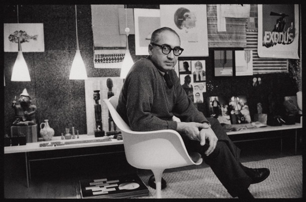
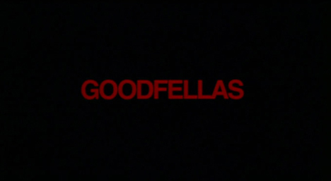
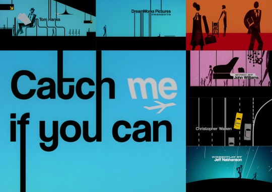
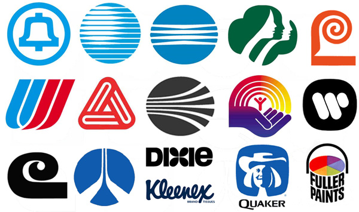

“Saul Bass wasn’t just an artist who contributed to the first several minutes of some of the greatest movies in history; in my opinion his body of work qualifies him as one of the best film makers of this, or any other time.”
This may seem as a bold statement for those unaware of works by legendary designer Saul Bass, however diving into any number of his projects and you’d soon be a believer. Coming from Spielberg himself, 3 time Oscar winner, creator of ‘Indiana Jones’, ‘Jurassic Park’, and ‘Saving Private Ryan’ who himself is highly regarded as one of cinema’s greatest, you know there’s some merit to his declaration.
Spielberg is referring to Saul’s work on film title sequences, possibly the most renowned pieces of Saul’s work, the initial taster of what’s to come before the film begins, creating the sense of anticipation setting the mood from the get go.
In this essay I will talk about the life and works of the prolific designer Saul Bass, from his film work creating title sequences, to his graphic design work on commercial logos. I’m going to look at some specific pieces of work that I particularly enjoy and hopefully this website I’ve designed has captured some of Saul’s essence!
“His title sequences do more than warn the audience that a few minutes remain to take make a trip to the popcorn stand. He invented the idea of titling movies- either at the beginning or end- with sequences that added something in a highly symbolic and evocative way.” (Brown, 1981-2)
Saul’s first title sequence was Otto Ludwig Preminger’s ‘Carmen Jones’ which was actually kind of given to him by accident. In the forties Saul moved from New York to Los Angeles to further his design practise, when Otto contacted Saul to brand his film ‘Carmen Jones’, Preminger was so impressed with Saul’s work that he also wanted Saul to create the title sequence for the film as well, thus became the beginning of Saul’s title sequence career.(Ben Radatz, 2012-3).
After the success of ‘Carmen Jones’ Saul collaborated with Preminger a number of times again. One of his next projects, ‘The man with the golden arm’ became one of his most iconic, for his branding of the film along with the title sequence.
The ‘Black misshapen arm’ became the iconic symbol for the project which represented Frankie Machine’s drug laden arm. Saul stated that, “The intent of this opening was to create a mood spare, gaunt, with a driving intensity…[that conveyed] the distortion and jaggedness, the disconnectedness and disjointedness of the addict’s life the subject of the film”(Bass in Kirkham 2011-4
The sequence consisted of each cast member’s name next to a disassembled piece of the human body which was laid out piece by piece, being dissected and transported around as the credits rolled. In a way each piece can be viewed as a piece of evidence in a court case, Kirkham explains the original concept for the sequence was to convey exactly this, he also mentions how during the sequence each piece and each lettering is inconsistent, different in shape and size, which is meant to convey how everyone’s version of events is different in the movie about a lawyer who begins to doubt his client’s story. (Kirkham, 2o11-5)
Saul Bass created over sixty title sequences over the span of his career, in the 1990’s after being roughly a decade since his last work, Critically Acclaimed director and Academy award winner Martin Scorsese contacted him in the hope that he would create the title sequence for his 1990’s ‘Goodfellas’ –
In Kirkham’s ‘Saul Bass: A life in film and design’ Scorsese recalls,
“I had a placement for the credit but didn’t have the right lettering. I had the right music cue but something wasn’t right. I just didn’t know what to do with it. I was watching a movie called Big and I see the end credits — Elaine and Saul Bass. I said ‘My God, this is great! They are working… they are still around. This is fantastic.’ I said to my producer, ‘Do you think we should venture to call and see if they would do this?” (Scorsese in Kirkham 2011- 6)
Kirkham explains the sequence was produced very quickly, due to Scorsese only really needing help with the lettering within the sequence. Saul and Elaine were able to create the finished product within two attempts.
The sequence show straight cut bold lettering against a black background with the sounds of traffic, fast going cars, passing through the night as the typography travels along with the sounds of the moving cars. After the initial scene which shows a brutal murder taking place between the wise guys, the sequence continues, only this time the original white typography has changed to a blood red.(Kirkham 2011-7)
The projects complete success lead to Saul working with Scorsese three more times, next of which was the sequence for the chilling ‘Cape Fear.’ A bone-tingling sequence of things to come, this particular sequence is my favourite of all of Saul’s work, containing murky, rippling waters which paired perfectly with the dark, foreboding music. The rippling water’s red dilution reminiscent of his previous work on ‘Goodfellas’ – A very effective piece of design.
Next on Scorsese’s list ‘Casino’ was one of Saul’s last ever title sequences, a film with similar gangster themes as of ‘Goodfellas’.
The start has a strong use of typography like all of Saul’s creations together with the LED lights of Vegas, travelling through Sin City, which eventually cuts to the scene of murder. A body is flying through the lights and flames until the end showing what looks like a casino boss overlooking his empire as the flames diminish.
The flames and body gliding through the air are very symbolic in this, Saul is making reference to key themes of the film, Power, Murder, Crime and passion along with setting the audience up for things to come.
To this day Saul Bass still influences title design, notably on Steven Spielberg’s ‘Catch me if you can’ – the designers Kuntzel & Deygas created a very Bass-esque sequence- Which could be the result of Spielberg being a big fan of Bass’ work!
Other notable works would include; Susan Bradley’s work on ‘Monster’s Inc’ which I think captures Saul’s spirit the most, inconsistent and differences between the lettering, the black backdrop and cut-out shapes reminiscent that of ‘The anatomy of a murder’ except this time the inconsistencies and differences may actually refer to how each door leads to a different person/place? Or the differences between each monster? Or even the differences in opinion on how to solve the scream shortage?
And my personal favourite, Neal Holman’s work on ‘Archer’ which I think is a great modern take on Saul’s original style, Kinetic typography flowing through a series of silhouettes and shapes travelling to the end, giving an idea of what’s to come later on in the episode.
Saul wasn’t just a Hollywood star in the title sequence game, but also a prolific commercial star, designing some of the worlds most memorable iconic logo designs.
“If I do my job well, the identity program will also clean up the image of the company, position it as being contemporary and keep it from ever looking dated”. — Saul Bass” (Bass in Kirkham 2011-7)>
He has his own signature style and methods when developing his logos each conveying the company’s corporate identity. Annyas, from Annyas.com had researched Saul’s logos for their lifespans to which he discovered that the average longevity for his logos is 34 years. (Parekh, 2013-8)
Ultimately it would be very safe to say that Saul Bass is one of the greatest designers to date, due to his vast portfolio ranging from the critically acclaimed title sequences, to the everlasting logo designs averaging longer lifespans than I have years, it would be hard not to find some form of reference to his work by doing any sort of research on either logo or title sequence design. I would definitely recommend anyone to research his portfolio before starting any sort of design work.
“Saul Bass's work touches people. Not just designers, or students, or observers of design, or those who know and can explain what a designer is and does, but simply people—many, many people.”(David R Brown 1981-9)